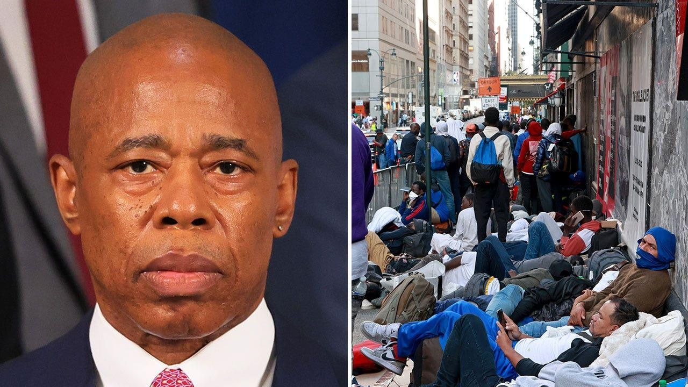

NYC Mayor Adams says migrant crisis threatens to ‘decimate’ city as he appeals for federal helpNew York City Mayor Eric Adams said on Thursday that the sanctuary city’s ongoing migrant crisis threatens to "decimate" it, as he accused border states of creating a "funnel" to send migrants to it. "We have created a funnel. All of the border states have now took the funnel right to New York City," he said on CBS News. Adams was talking about a migrant crisis that has seen nearly 100,000 migrants arrive in the city since last year. While it is a small fraction of the millions that have hit the border during the current migrant crisis, officials say it has left the city overwhelmed. Some migrants have been bussed directly from Texas while others have made their own way to the city. But it has led to scenes of chaos in New York, with migrants camped outside the Roosevelt Hotel, which acted as an arrival center. Adams said this week the crisis could cost the city $12 billion by the middle of next year without policy changes and additional help from the state and federal government. On Thursday, he warned that the crisis had national implications. "New York City is the economic engine of this entire state and country, if you decimate this city, you're going to decimate the foundation of what's happening. Look at Chicago, Los Angeles, Houston, and now hear the governor of Massachusetts." He was referencing the announcement by Massachusetts Gov. Maura Healey to declare a state of emergency and call for more federal support -- including work authorizations for adult migrants and a comprehensive immigration reform in Congress. A DHS official told Fox News Digital that in FY 2023 it has provided more than $2.8 million in funding to the city of Boston through FEMA's Emergency Food and Shelter Program. The official also said that the administration "will continue to collaborate directly with city and state officials to coordinate our efforts and we continue to call on Congress to pass comprehensive immigration reform." Meanwhile, New York City in June received over $100 million in funding, which angered Sen. Kyrsten Sinema, I-Ariz., who said she was "livid" that the money wasn’t going to those states on the front lines of the crisis. "What we’re experiencing here in Arizona is matched only by what folks are experiencing in southern Texas," Sinema said. "Those are the two communities that are experiencing this crisis. The rest of the country is experiencing some elements of it, but we are experiencing the brunt." Adams pushed back on that claim, saying it was only part of the cost New York City was bearing. "And so when people say ‘well we gave them a $100 million,’ – towards a $1 billion bill? What table are we dining at?" |
 |